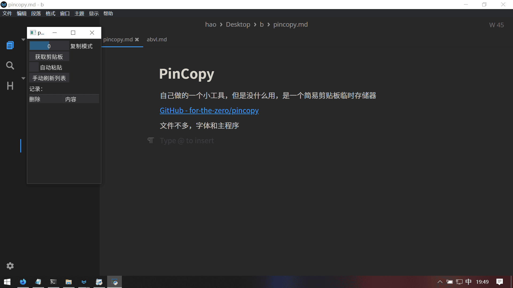

PinCopy
自己做的一个小工具，但是没什么用，是一个简易剪贴板临时存储器
文件不多，字体和主程序
长这样

懒得裁了，直接放吧
用了pyperclip操控剪贴板，pyautogui搞一点特殊操作，dpg搞界面
可以获取剪贴板，把内容临时加到列表中（仅限文字），可以随时删除
复制指点击内容对应的按钮后复制到剪贴板，模式有两个，一个仅复制，一个在你按下之后快速地alt+tab再ctrl+v再alt+tab，就可以快速连续自动粘贴了，很聪明对吧 聪明个鬼
自动粘贴就是可以在你复制文本之后直接把内容粘贴到列表中，就不用回来手动点了
关掉程序，内容直接没了，懒得搞存储
不然怎么叫“临时”呢